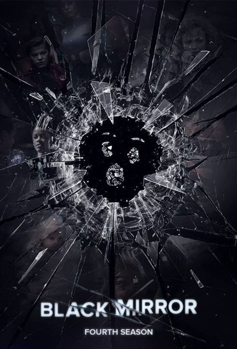

26 avril 1986, l'histoire vraie de la pire catastrophe causée par l'homme et de ceux qui ont sacrifié leur vie pour sauver l'Europe du drame.
Vous pourriez apprécier >
Avis spectateurs >
Avis de Vanessa (21/12/19 à 18h11)
Une série géniale !! Le régime soviétique fait froid dans le dos, tant de mensonges... J'ai adoré le jeu de machin et le jeu de truc ! Superbes musiques ! Juste dommage qu'on ne voit pas plus l'explosion de la centrale !
Avis de Sabrina (01/01/20 à 00h11)
Si certains préfèrent fêter le nouvel an, moi j'ai préféré regarder Chernobyl car c'est une série géniale ! Des acteurs géniaux, de bons dialogues et de beaux décors !
Avis de Dylan (11/11/19 à 9h01)
Une série rendant un hommage poignant aux femmes et hommes qui ont donné leur vie pour sauver l'Europe de la catastrophe (nucléaire).
Synopsis >
26 avril 1986, l'histoire vraie de la pire catastrophe causée par l'homme et de ceux qui ont sacrifié leur vie pour sauver l'Europe du drame.
Vous pourriez apprécier >
Avis spectateurs >
Avis de Vanessa (21/12/19 à 18h11)
Une série géniale !! Le régime soviétique fait froid dans le dos, tant de mensonges... J'ai adoré le jeu de machin et le jeu de truc ! Superbes musiques ! Juste dommage qu'on ne voit pas plus l'explosion de la centrale !
Avis de Sabrina (01/01/20 à 00h11)
Si certains préfèrent fêter le nouvel an, moi j'ai préféré regarder Chernobyl car c'est une série géniale ! Des acteurs géniaux, de bons dialogues et de beaux décors !
Avis de Dylan (11/11/19 à 9h01)
Une série rendant un hommage poignant aux femmes et hommes qui ont donné leur vie pour sauver l'Europe de la catastrophe (nucléaire).
Mr Robot
Black Mirror
Plus de recommandations >